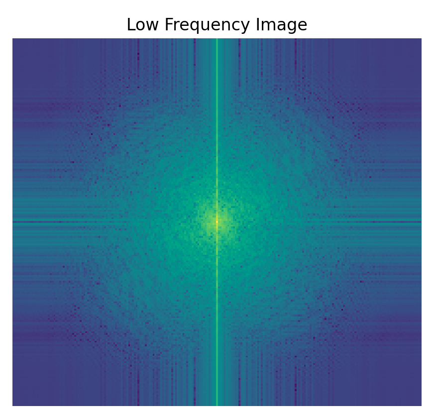
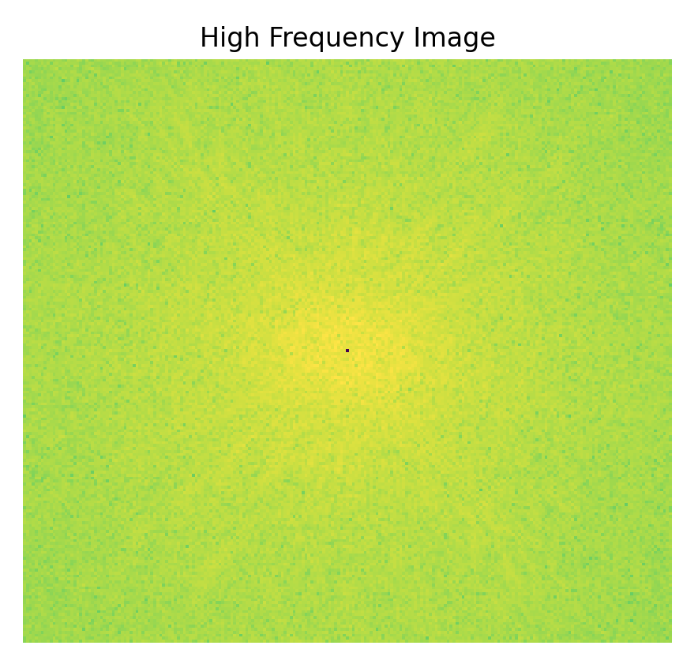
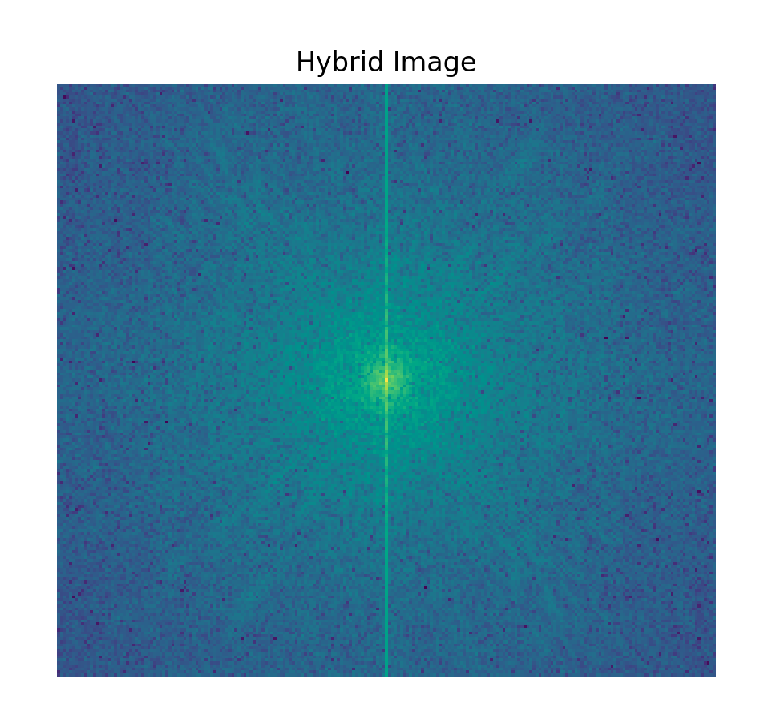
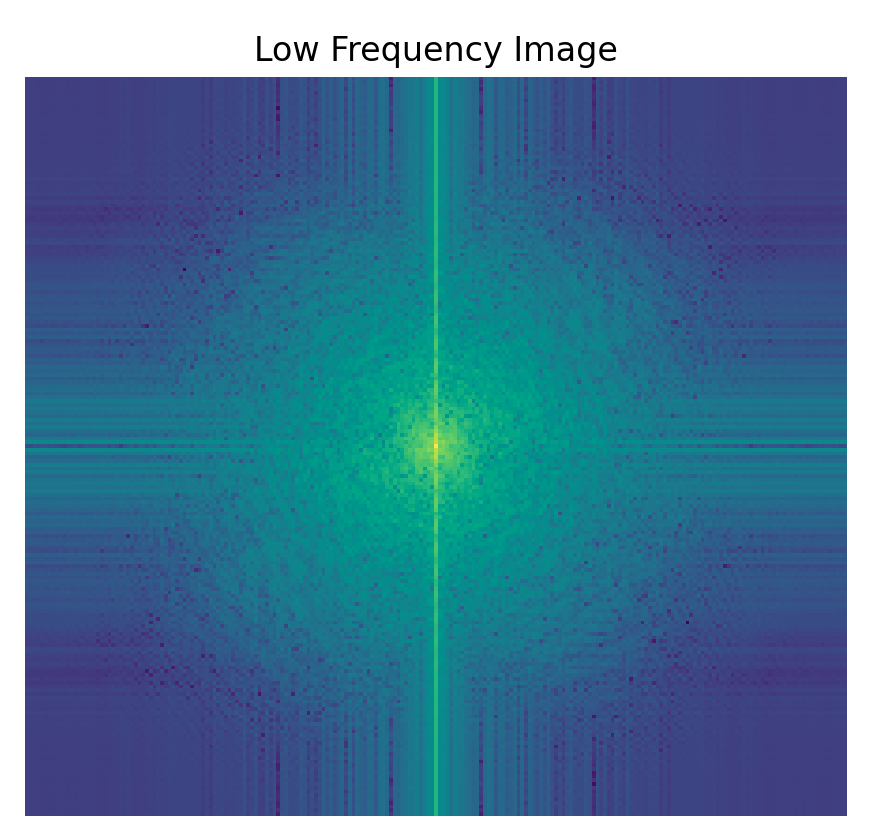
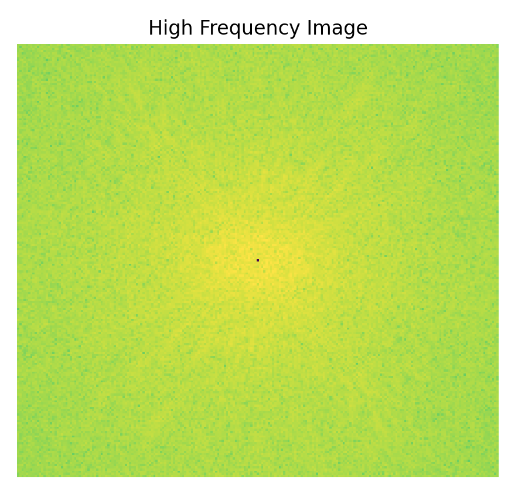
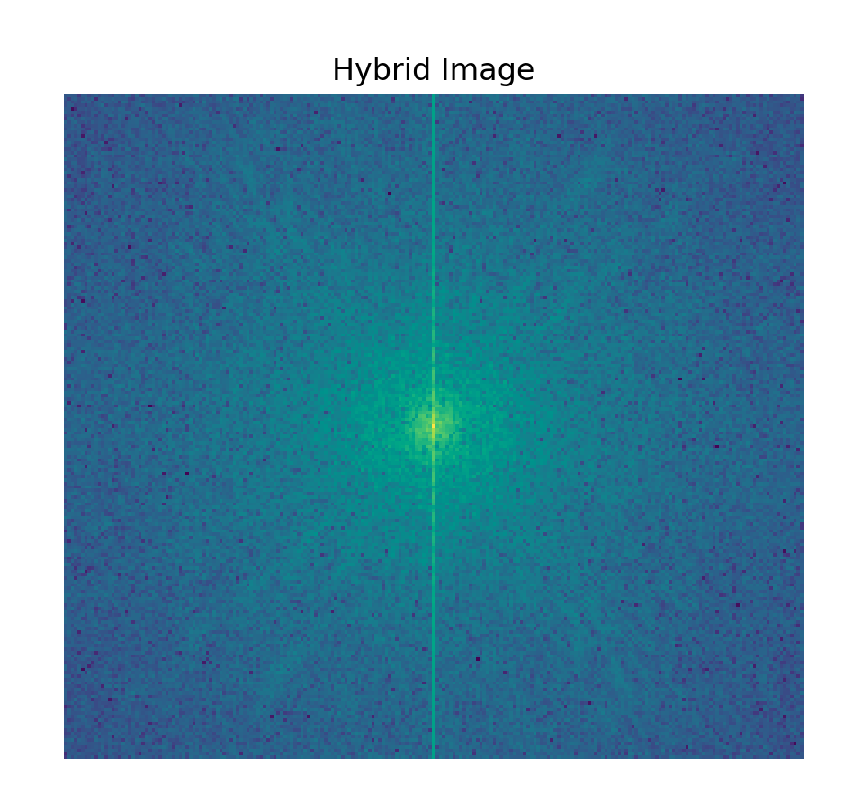
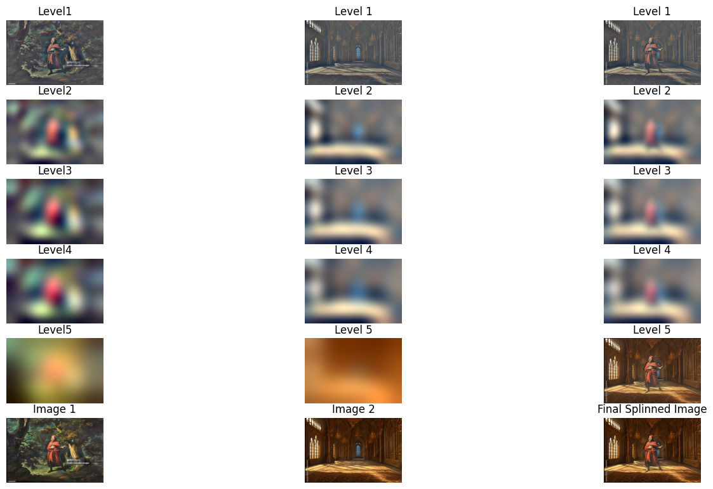

In this project, we utilize guassian filters, 2d convolutions, pyramid and laplacian stacks, and various image manipulation tools to blur, sharpen, and combine (blending and creating hybrids) images!
First, we compute the partial derivatives of the image in both x and y directions. We also define a ' humble' finite difference as our filter in the x and y directions as Dx = [1 -1] and Dy = [1 -1]^t.


Using these values, we convolve the image with these operators to obtain gradient components Gx and Gy, where Gx is the horizontal changes and vice versa. The gradient magnitude is calculated as the Euclidean norm of these components, which we can define as Gradient Magnitude = sqrt(Gx^2 + Gy^2).

Finally, we can threshold the gradient magnitude to create a binarized mapping where the pixels shown are above the threshold of 0.289.

To make the results less noisy, we can use the Gaussian Filter. First, we apply the filter to blur the image. Only then do we apply the difference operators.
Overall this process requires two convolutions: One of them for the Gaus Filter and the other one being the convoling the blurred image with the steps from part 1.1

As you can see in the bottom row, I included something known as the "DOG FILTER". This is a slight alternation from what was outlined above, and instead we convole the filter with the difference operators, which would be computationally more efficient.
In my code implementation, I wrote a line that essentially checks if the two images had values within a very small tolerance to see if they were equal, to which it returned true.

Notice that these results look the exact same!
The idea behind image sharpening is to first blur the image, then subtract it from the original image. This leaves us with the higher frequencies since blurring leaves us with the lower frequencies.
We then can optionally increase the sharpness factor with an alpha (a) value, which scales proportionally to the higher frequency image.


Notice as the alpha value increases, the image appears to get more 'sharper'!
Below is one of my favorite portrays of Dante's Inferno when he is walking through the 'dense' forest in Canto 1
However, one exercise that we can do is to sharpen the blurred image to see if we can reproduce the same original image. Since there is information loss when we blur an image, sharpening that blurred image cannot produce the same results as the original image.


Notice that regardless of the alpha value, it seems like the image just looks pops more detail out, while also lossing some of the more subtle details from the original image.
For the hybrid section, we can combine the low frequencies of one image with the high frequencies of another. The goal is to be able to see more of the lower frequency image when far away, but to see the higher frequency image when you are closer.
Once again, we apply a Gaussian filter to separate the lower and higher frequencies from the original images.
Here is the hybrid image of Derick and Nutmeg combined.


I also incorporated color into the hybrid process to see how it would turn out. Below are the following results:


Personally, I think having color for only Nutmeg (high frequencies) was the best result.
Note: I used some color balancing to make the images darker for a better blend.
Here are some of the other hybrids that I created!
Here, I combined two of my favorite twitch emotes together: xdd and xpp to create a 'lovely' cat of sorts


Now for my personal favorite hybrid...


What a crazy picture!!!!
Here are the FFTs for the following pictures
 





Now here's a failure case...


Pretty sure the failure in this case was the fact that the shapes of the two pepes were just TOO different with one another. At least the eyes lined up reasonably well...
For the final portion of the project, we aim to create an Oraple!!!


To do this, we first need to implement a Gaussian and Laplacian stack.
The Gaussian Stack was done by blurring an image with a Guassian over and over again, whereas the Laplacian stack was created by taking the difference between each of the layers in the Gaussian Stack.
Finally, to blend the images together, I created a vertical mask which is then placed over each layer of the stack, and then blended them together!

One more note, since we are incorporating color, everything that we do has to be done on each of the separate color channels separatly, which means we'll have to recombine the results afterwards.
Our final results looks like this!!!

What a oraple... I achieved this with some extreme sigma values on the gaussian filter function, so my stacks may look a bit 'off', but if I tone them down, I risk ruining the perfection known as that Oraple above^^^. However, when lowering the values, the stacks looks much more normal.
Now, time for some victory laps!


Before, we had a vertical mask, so this time, we'll custom make a unique shapped mask! In this case, a mask of Dante!


and heres the mask that I used... Notice that there is a shadow on Dante's left... That was because my mask was not as close as it could of been to Dante.

And finally here's the recreation of the figure for Dante in the Castle
